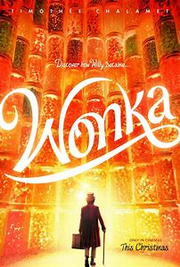

WONKA
Actors: Timothée Chalamet, Calah Lane, Keegan-Michael Key, Paterson Joseph, Matt Lucas, Hugh Grant
Age Restriction: PG V
Showing Times: 11:00, 13:45.
BRIEF SYNOPSIS
Willy Wonka, an aspiring magician, inventor, and chocolatier, arrives somewhere in Europe to establish his chocolate shop at The Galéries Gourmet. Burning through his meager savings, he is coerced to stay at Mrs. Scrubitt's boarding house by her henchman/husband Bleacher and, despite orphan Noodle's warning about the fine print, signs a contract because he is illiterate. To pay them off, Wonka introduces "hoverchocs", chocolates that make people fly, facing opposition from three rival chocolatiers who call The Chief of Police to confiscate his earnings for disrupting trade and selling without a chocolate store. Unable to pay the exorbitant fees imposed on him by the contract, Wonka is captured and forced to work in a launderette for Mrs. Scrubitt alongside five other captives, including Noodle. Learning of a "Chocolate Cartel" plot involving the rival chocolatiers, he makes his escape with the help of Noodle; while he promises her a lifetime supply of chocolates, she promises to teach him how to read. The Cartel exploits The Chief's weakness for chocolate to attempt to force Wonka to leave town by making a police eat 720 chocolates. Wonka tells Noodle that his affinity for chocolate stems from his late mother. He also mentions the theft of his chocolates by an enigmatic orange man who has been stealing them for years. To produce his signature chocolate, Wonka and Noodle travel to the local zoo, milking Abigail the giraffe. Together with the other launderette workers, they embark on a chocolate-selling crusade to alleviate their debts while using tunnels underneath the city to evade Scrubitt and The Chief. Unmasking an Oompa Loompa named Lofty as the thief, Wonka discovers that the Oompa Loompas seek retribution for the cocoa beans Wonka took from Loompaland under Lofty's watch. Wonka captures Lofty, but Lofty dupes Wonka into freeing him; he strikes Wonka with a frying pan and snatches a jar of chocolate before disappearing. Using the funds raised from selling chocolates, the launderette workers open Wonka's dream chocolate store. The Chief and The Chocolate Cartel, now unable to arrest him since he has a legitimate shop, expose him to Scrubitt. Infusing his chocolates with Yeti sweat, Scrubitt incites chaos among the customers, leading to the destruction of Wonka's store. Wonka agrees to the Cartel's offer to leave town by ship to pay off everyone's debts. All of the workers are released from the launderette except Noodle; Cartel leader Arthur Slugworth pays Scrubitt to keep her there indefinitely. Wonka deduces that Noodle and Slugworth are related, before he and Lofty are forced to jump off the boat that has been rigged to explode. After rescuing Noodle, Wonka and the group devise a strategy to obtain the Cartel's incriminating account book. Using Abigail as a distraction, Wonka and Noodle infiltrate the Cartel's base, where they are confronted by the Cartel. Slugworth discloses that after the death of Noodle's father, his own brother Zebedee, he falsely reported Noodle as deceased to her mother, Dorothy, and gave her to Scrubitt in order to eliminate her claim to the family fortune. Held at gunpoint, Wonka and Noodle are nearly drowned in a vat of chocolate, but Lofty rescues them. Wonka and Noodle unveil the Cartel's misdeeds to the authorities and the public. They release the Cartel's chocolate reserve through a fountain, laced with Wonka's unique ingredients, ruining the Cartel's enterprise. The Cartel meets their downfall, and the police arrest the corrupt Chief (who has become rather obese due to eating too much chocolate). The crowd revels in tasting Wonka's chocolate fountain, and Wonka unwraps the last chocolate bar his mother had given him, discovering a golden paper with a message stating that "The secret is it's not the chocolate that matters, but who you share it with." He splits the bar into six pieces to share with his friends before reuniting Noodle with her mother Dorothy Smith. He then settles his debt with Lofty and acquires an abandoned castle to commence building his own chocolate factory with Lofty as his tasting chef. Wonka's friends return to their old lives. Scrubitt and Bleacher are arrested after their attempt to eliminate evidence of sabotaging Wonka's shop backfires.